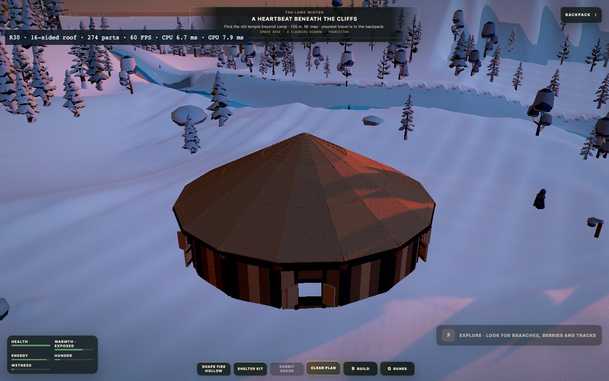
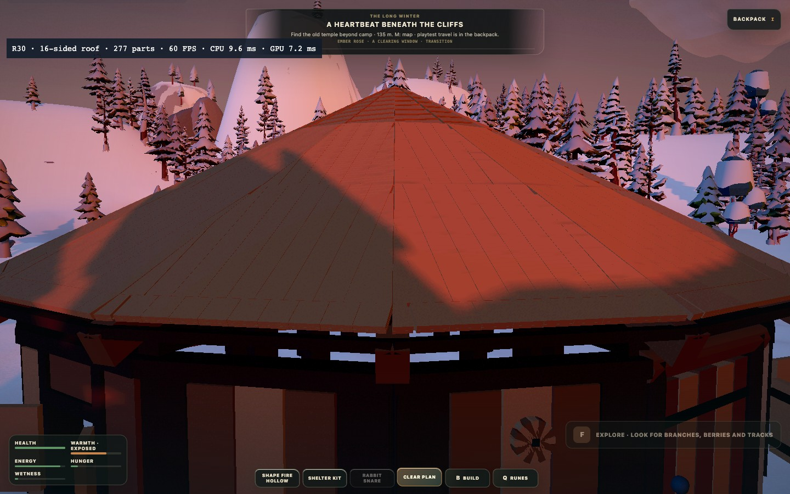

274 oikeaa rakennusosaa: seinät, ikkunat, ovi, kantavat palkit, pystytuet, kattopuut, välituet, ruoteet ja kate. Koetalo luotiin samoilla auktoritatiivisilla rakennuskomennoilla kuin pelissä. Tämä ei ole väite 274 osan käsin hiirellä rakentamisesta. Listat ja ruusuke sijoitettiin selaimessa osoitussäteellä ja tallennettiin/latautettiin takaisin.


Sama talo, kolme kamerakorkeutta ja kiertävä kamera. Ensin 15 s ehjänä, sitten kaikki 1 000 osaa tarkoituksella yhtä aikaa tuleen ja 25 s mittaus, lopuksi 65 s sortumaa ja raunioita. Tämä on rasituskoe, ei normaalin palon leviämisnopeus. Eläimet, rakennusosien pintalumi ja lämpökenttä pysyvät nykyisen playtestin tapaan pois käytöstä.
Ei hyväksyttyä 60/120 FPS -suorituskykylupausta. Pahin ruutuaika, p95/p99 sekä alitusten kesto ratkaisevat; keskiarvo-FPS:ää ei käytetä hyväksyntään. Yksi paikallinen Chrome-vertailupari ei ole eri koneiden suorituskykytakuu. Selainajon näyttörytmi on noin 60 Hz, joten se ei todista 120 FPS:n saavutettavuutta.
| Vaihe / build | Pahin ms | p95 / p99 ms | Alin hetkellinen FPS | Aika alle 60* | Pisin alitus* |
|---|---|---|---|---|---|
| Ladataan mittaukset… | |||||
* 3 % toleranssi erottaa 16,7 ms kellopyöristyksen todellisista myöhästymisistä. Raakadatassa myös tiukka 60/120 FPS, yli 50/100/250 ms piikit, CPU/GPU-ajat ja piirtokutsut. R29.4 ennen · R30 jälkeen.